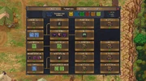
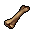
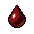
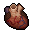
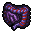
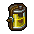
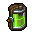
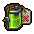
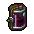
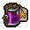

Anatomy and Alchemy (Tech Tree)
Half of this technology tree deals with autopsies and the kind of organs you can get. It's unlocked by the tutorial.
The other half, the alchemy part is unlocked upon talking to the old woman in the swamp.
A very small part deals with zombies and is unlocked by talking to Gunter.
As you unlock more items along this tree you'll gain access to better autopsy techniques and resources, as well as more alchemical apparatuses and products.
As part of the Game of Crone DLC, at the end of this technology tree, there are shown all unlocked bags that you can make (they are not connected to each other or anything else).



Anatomy
This branch is unlocked through the tutorial by speaking to Gerry. For more information on the anatomical operations see Morgue.
| Technology | Prerequisite tech | Cost | Unlocks | |
|---|---|---|---|---|
| First Slice | None | Unlocked through the tutorial. | 
|
Blueprint: Preparation place |

|
Blueprint: Pallet | |||
| Extract: Flesh | ||||
| Hardspares | First slice | Extract: Skull | ||
 |
Extract: Bone | |||

|
Extract: Skin | |||
| Softspares | First slice |  |
Extract: Blood | |

|
Extract: Fat | |||
| Gentle Butcher | Hardspares + Softspares |

|
Perk: Butcher | |
| Important parts | Softspares | Extract: Brain | ||
 |
Extract: Heart | |||
| Extract: Intestines | ||||
| Anatomy II | Important parts | 
|
Blueprint: Preparation place II | |

|
Blueprint: Double pallet | |||
| Surgery | Anatomy II | 
|
Perk: Surgeon | |
| Dark Bodies | Anatomy II | Complete the Inquisitor's quest | Extract: Dark brain | |

|
Extract: Dark heart | |||
 |
Extract: Dark intestines | |||
| Cultist | Dark Bodies | Perk: Cultist | ||
| Embalming | First Slice + Embalming Liquids |

|
Blueprint: Embalming table | |

|
Blueprint: Mortuary rack | |||
| Recipe: Prayer for repose | ||||
| Embalming II | Embalming | 
|
Blueprint: Embalming table II | |

|
Blueprint: Fridge pallet | |||
| Second chance | None | Talk to Gunter and search broken cabinet nearby. |

|
Blueprint: Resurrection table |
| Zombie logistics | Second chance | 
|
Blueprint: Porter station | |
Alchemy
This branch is unlocked after accepting the quest to restore Clotho's memory. For more information on the various processes see alchemy.
| Technology | Prerequisite tech | Cost | Unlocks | |
|---|---|---|---|---|
| The Beginning of Alchemy | None | 
|
Blueprint: Alchemy mill | |

|
Blueprint: Alchemy workbench (tier I) | |||

|
Blueprint: Hand mixer | |||
| Embalming Liquids | The Beginning of Alchemy | 
|
Blueprint: Church workbench | |

|
Recipe: Lye injection | |||
 |
Recipe: Acid injection | |||
| Embalming Liquids II | Embalming Liquids + Advanced Alchemy |
 |
Recipe: Glue injection | |
 |
Recipe: Preservative injection | |||
| Recipe: Restore injection | ||||
| Embalming Liquids III | Embalming Liquids II |  |
Recipe: Dark injection | |
| Recipe: Silver injection | ||||
 |
Recipe: Gold injection | |||
| Alchemy Storage | The Beginning of Alchemy | 
|
Blueprint: Alchemy rack | |
| Advanced Alchemy | Alchemy Storage | 
|
Blueprint: Alchemy workbench (tier II) | |

|
Blueprint: Distillation cube | |||
| Distillate | Advanced Alchemy | 
|
Blueprint: Distillation cube II | |
| Master of Alchemy | Distillate | 
|
Perk: Scientist | |
| Zombie alchemy workbench | Distillate | Talk to Gunter and dig up the buried zombie |

|
Blueprint: Zombie alchemy decomposer |

|
Blueprint: Zombie alchemy workbench | |||
| |||||